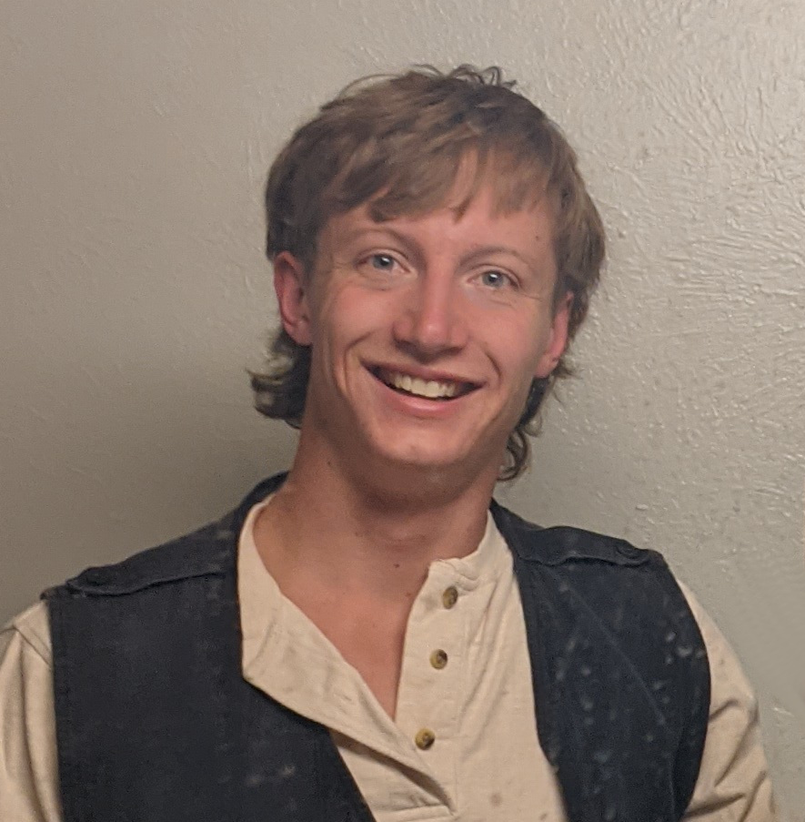

Alex Fischer
I am a second year physics PhD student at the University of New Mexico. I am associated with the Center for Quantum Information and Control (CQuIC) at UNM. I work with professor Akimasa Miyake studying quantum information. I did my undergrad at University of Massachusetts Amherst, where I studied Computer Science and Mathematics. In between my undergrad at UMass and grad school at UNM, I was a software engineer at Microsoft, where I worked on Azure backend.
Links
- Email: alexander (dot) fischer3 (at) gmail (dot) com
- CV (last updated 2024-05-29)
- Google Scholar
- Blog
Publications
-
Hardness results for decoding the surface code with Pauli noise
- Authors: Alex Fischer, Akimasa Miyake
- arXiv preprint
-
Strategies to Improve Few-shot Learning for Intent Classification and Slot-Filling
- Authors: Samyadeep Basu, Karine lp Kiun Chong, Amr Sharaf, Alex Fischer, Vishal Rohra, Michael Amoake, Hazem El-Hammamy, Ehi Nosakhare, Vijay Ramani, Benjamin Han
- Published in: 2022 Workshop on Structured and Unstructured Knowledge Integration (SUKI)
- arXiv preprint
-
Distributing Graph States Across Quantum Networks
- Authors: Alex Fischer, Don Towsley
- Published in: 2021 IEEE Conference on Quantum Computing and Engineering (QCE)
- arXiv preprint
-
A Real-Time Solver For Time-Optimal Control Of Omnidirectional Robots With Bounded Acceleration
- Authors: David Balaban, Alex Fischer, Joydeep Biswas
- Published in: 2018 IEEE/RSJ International Conference on Intelligent Robots and Systems (IROS)
- arXiv preprint